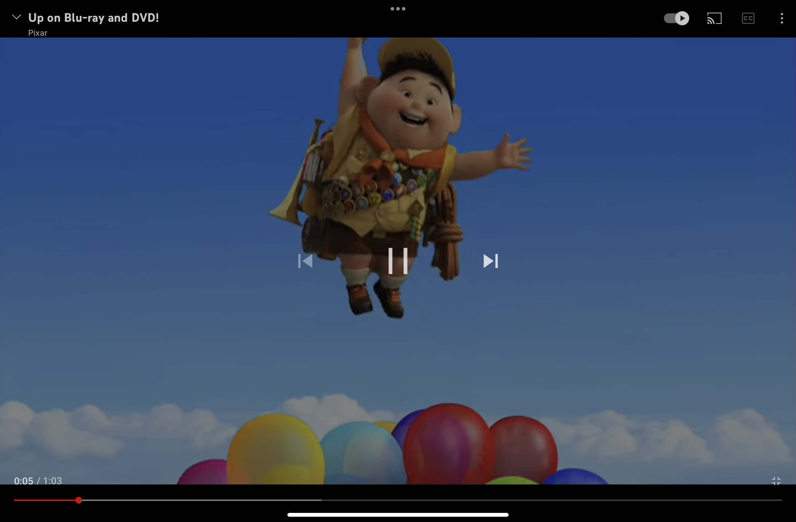

Pause
Watching movies and videos is one of the most common use cases of an iPad, yet the media playback controls in most of the video streaming apps look non-iPad-like.
Publish
It was late last year when John talked about his special little project and how he would eventually make it open source. It was a static site generator built with Swift for Swift developers.
He had built his website Swift by Sundell using Publish. No JavaScript. Just pure HTML and CSS. The site was blazingly fast. The load time was almost instant. Then I decided. If I ever launch a website, I'll have it JavaScript free. And here we are.
Catalyst
The time has come, and I have decided to generate my site using Publish. With the limited knowledge of Swift that I had gained through the first 12 days of 100 Days of SwiftUI, I created a starter website and customised it to my needs.
I've always wanted to try my hand at blogging, but I never thought I was good enough to write. A recent tweet by Paul Hudson (the guy behind 100 Days of SwiftUI) was the catalyst that pushed me to do it.
Welcome to vivek.dev 🙏